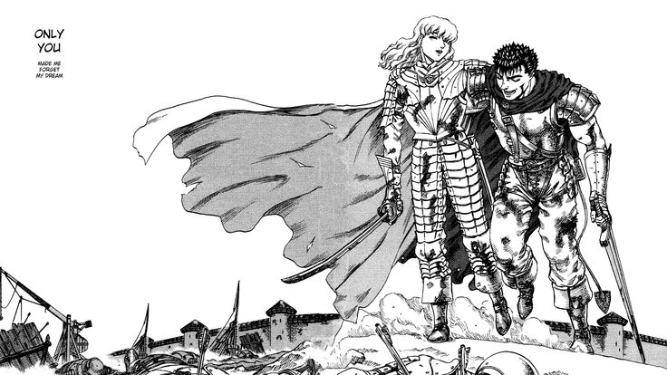

Mise en place de l'aventure
Cette aventure se base grandement sur l'œuvre de Kentaro Miura, BERSERK.
Elle contient donc des spoilers sur l'œuvre originale. De plus, BERSEK est un manga violent et sanglant.
Vous voilà prévenu.
